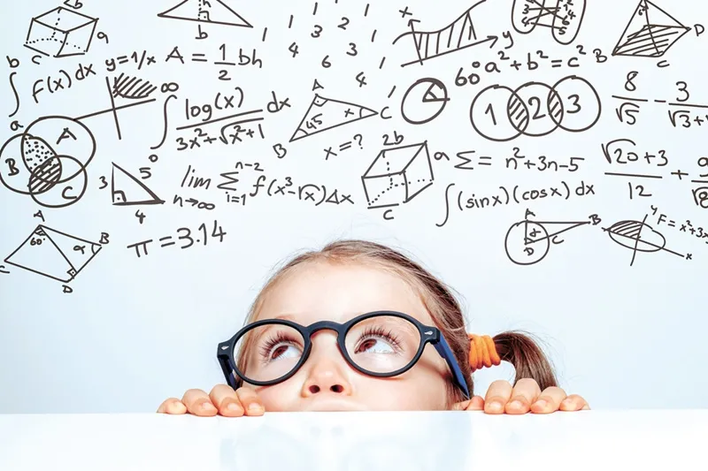
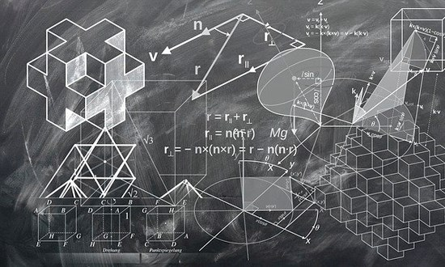

A matemática é uma ciência fundamental que estuda padrões, estruturas e mudanças. Ela é utilizada para descrever e analisar fenômenos no mundo natural e em diferentes áreas do conhecimento. Compreender conceitos matemáticos é essencial para desenvolver habilidades analíticas e resolver problemas complexos.
Entre os ramos da matemática, a álgebra se destaca por sua aplicação em resolver equações e entender relações entre variáveis. A álgebra básica envolve operações com números e letras, enquanto a álgebra avançada explora estruturas mais complexas como grupos, anéis e corpos.

A geometria, outro ramo importante da matemática, estuda as propriedades das figuras e dos espaços. Desde as formas simples, como triângulos e círculos, até conceitos mais avançados, como superfícies curvas e volumes, a geometria é crucial para a arquitetura, engenharia e muitas outras disciplinas.
